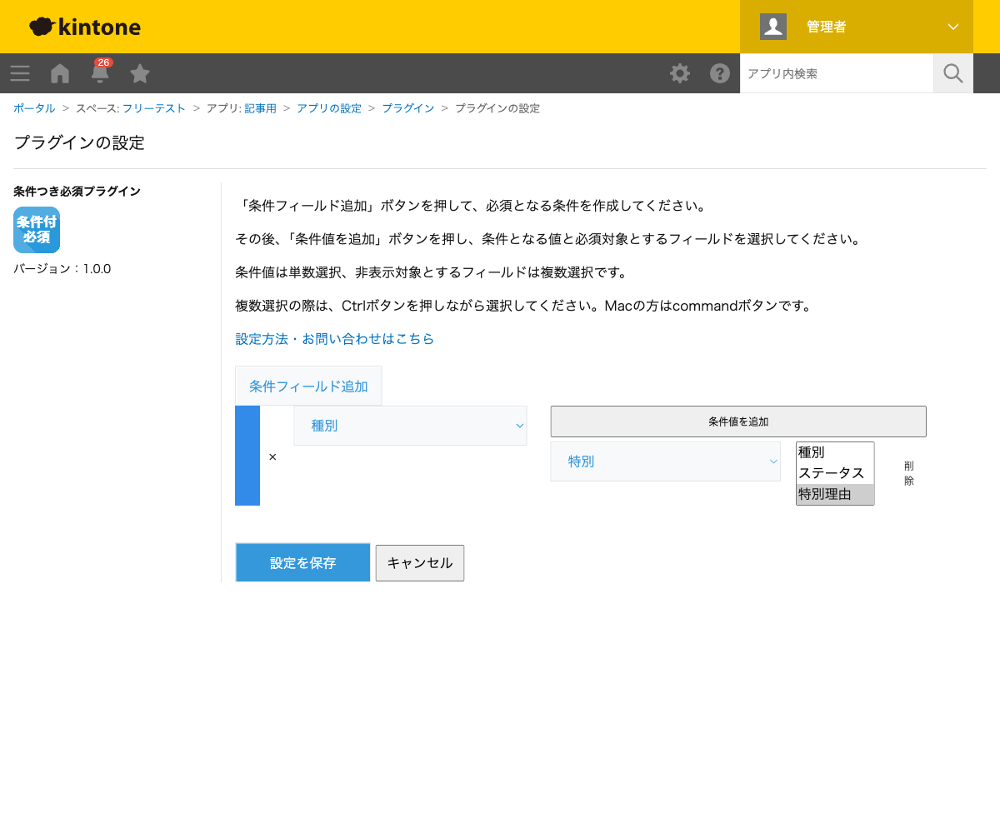
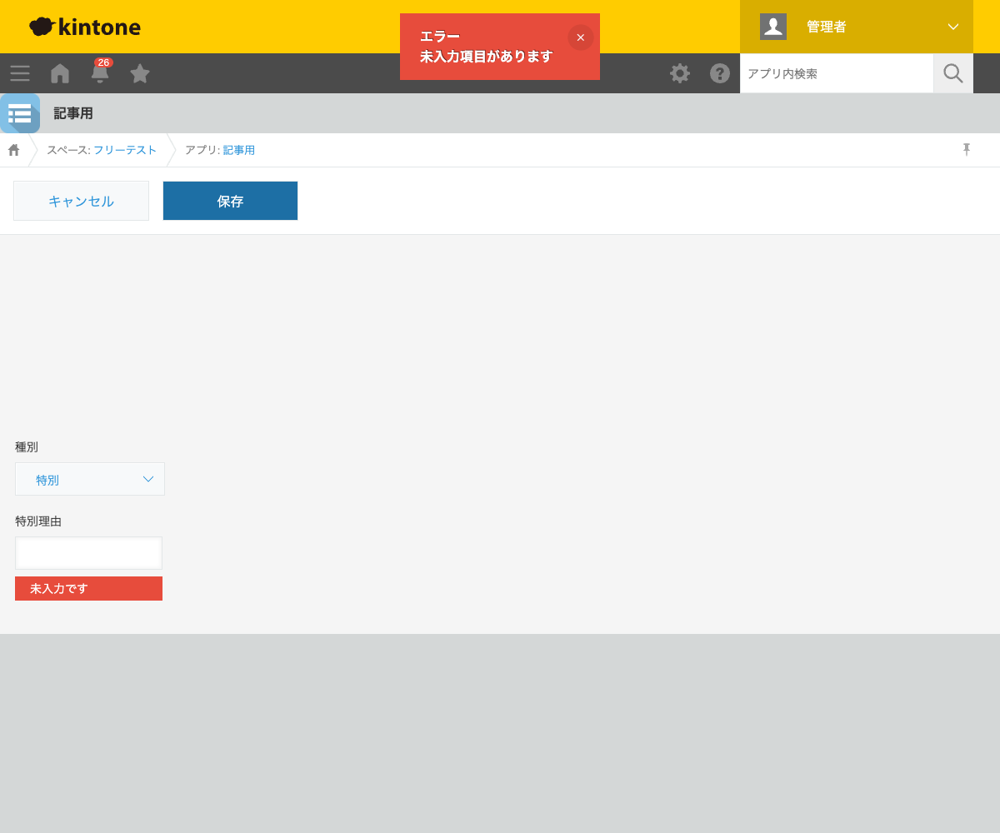

GovAppsプラグイン 安全性を確認できる無料kintoneプラグイン集
「種別で『特別』を選んだときだけ、理由の入力を必須にしたい」というように、ある項目の値に 応じて別の項目を必須にしたい場面はよくあります。この記事では、無料プラグインで条件付き必須を 実現する方法を、実際のバリデーションエラー画面つきで解説します。
kintone標準のフィールド設定では、「必須にする」はフィールドごとの固定設定で、 「常に必須」か「常に任意」のどちらかしか選べません。「ある選択肢を選んだときだけ必須」 という条件付きの制御は、標準機能だけでは実現できません。
| 方法 | 向いている場合 | 注意点 |
|---|---|---|
| JavaScriptを自作する | 社内に開発者がいて、複雑な条件を組みたい場合 | 保存イベントでのバリデーション処理・エラー表示のロジックを自前で実装・保守する必要がある |
| 有料の他社プラグイン | 予算があり、サポートを重視する場合 | 月額課金が発生する。ソースコードが非公開で処理内容を確認しにくい |
| GovAppsプラグイン(このプラグイン) | 無料で、条件付き必須をすぐに試したい場合 | 条件フィールドはドロップダウン・ラジオボタンに対応(それ以外の型は対象外) |
条件つき必須プラグインは無料・広告なしで、 ソースコードをGitHubで全公開 しています。バリデーション処理はブラウザ内のJavaScriptだけで完結し、外部サーバーへの通信は 一切ありません。
条件つき必須プラグインは、条件となるフィールド・ 条件値・必須にする対象フィールドを設定するだけで使えます。

種別で「特別」を選び、特別理由を空欄のまま保存しようとすると、 「未入力項目があります」というエラーが表示され、保存がブロックされます。 対象フィールドの下にも「未入力です」という具体的なメッセージが表示されるため、 利用者はどの項目を埋めればよいかすぐに分かります。

種別を「通常」に戻すか、特別理由に何か入力すれば、通常どおり保存できます。